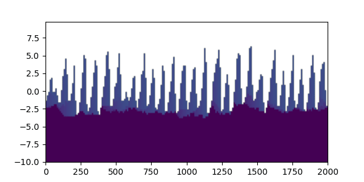

Temporal subsets of stratigraphy¶
This example creates straigraphy for a temporal subset of the dataset. This allows for a view of time evolution of stratigraphy itself, for example, the changing stack of an experiment through time.
In this example, we make the subsets into a movie, but the relevant lines for creating a subset are:
vol, elev = spl.strat.compute_boxy_stratigraphy_volume(
aeolian_eta[:i],
aeolian_time[:i],
z=zs,
sigma_dist=subsidence_rate,
)
where the :i indicates the slice of all of the times to be used in the calculations. See compute_boxy_stratigraphy_volume.
import numpy as np
import matplotlib.pyplot as plt
from matplotlib import animation
import sandplover as spl
# set up to use constant z for stratigraphy, so all frames line up over time
zs = np.arange(-10, 10, 0.25)
# load the sample data and define indices to use in the plotting
aeolian = spl.sample_data.aeolian()
time_idxs = np.arange(100, 300, step=10)
aeolian_eta = aeolian["eta"].copy()
aeolian_time = aeolian["time"].copy()
subsidence_rate = 0.01
cross_section_idx = 10
def update_field(i):
vol, elev = spl.strat.compute_boxy_stratigraphy_volume(
aeolian_eta[:i],
aeolian_time[:i],
z=zs,
sigma_dist=subsidence_rate,
)
im.set_data(vol[:, :, cross_section_idx])
# make one strat for the initial, to have the full shape of the image
vol, elev = spl.strat.compute_boxy_stratigraphy_volume(
aeolian_eta[: time_idxs[0]],
aeolian_time[: time_idxs[0]],
z=zs,
sigma_dist=subsidence_rate,
)
# make the first frame
fig, ax = plt.subplots(figsize=(6, 3))
im = plt.imshow(
vol[:, :, cross_section_idx],
extent=[0, aeolian.dim1_coords[-1], elev.min(), elev.max()],
aspect="auto",
origin="lower",
vmin=0,
vmax=time_idxs[-1],
)
Then, make the animation.
import os
os.makedirs("../../../../build/plot_directive/guides/examples/plot/", exist_ok=True)
anim = animation.FuncAnimation(fig, update_field, frames=time_idxs, interval=5)
anim.save('../../../../build/plot_directive/guides/examples/plot/strat_movie.gif', fps=5)
anim = animation.FuncAnimation(
fig, update_field,
frames=time_idxs,
interval=5,
blit=False)
anim.save('../../../../build/plot_directive/guides/examples/plot/simple_movie.gif', fps=5)
plt.show()
anim = animation.FuncAnimation(fig, update_field, frames=time_idxs, interval=5)
anim.save("strat_movie.gif", fps=5)
plt.show()
And view the gif:
